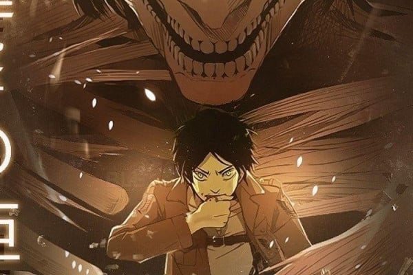
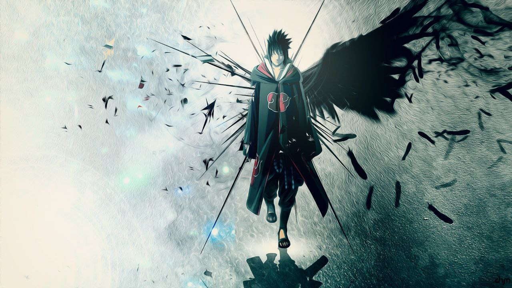
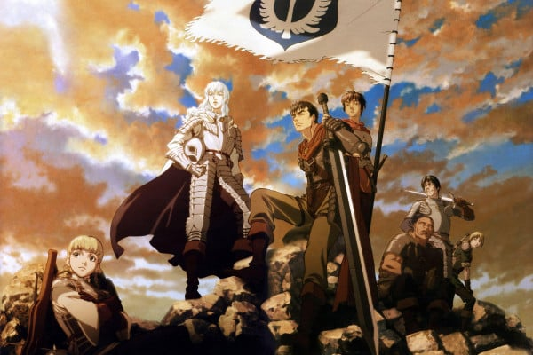
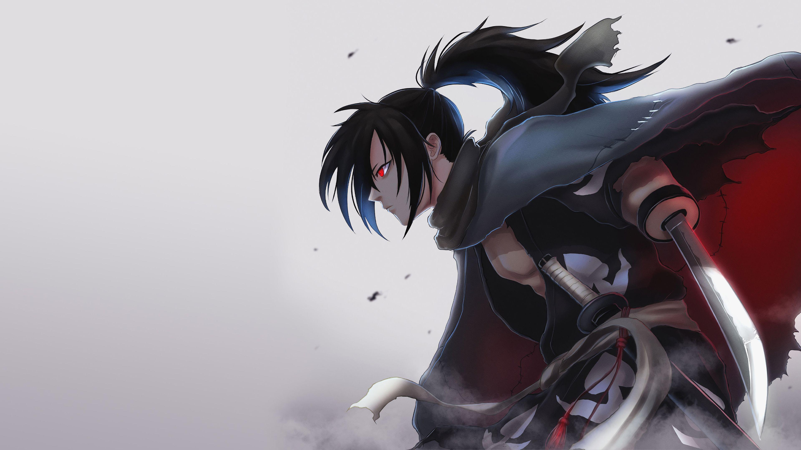
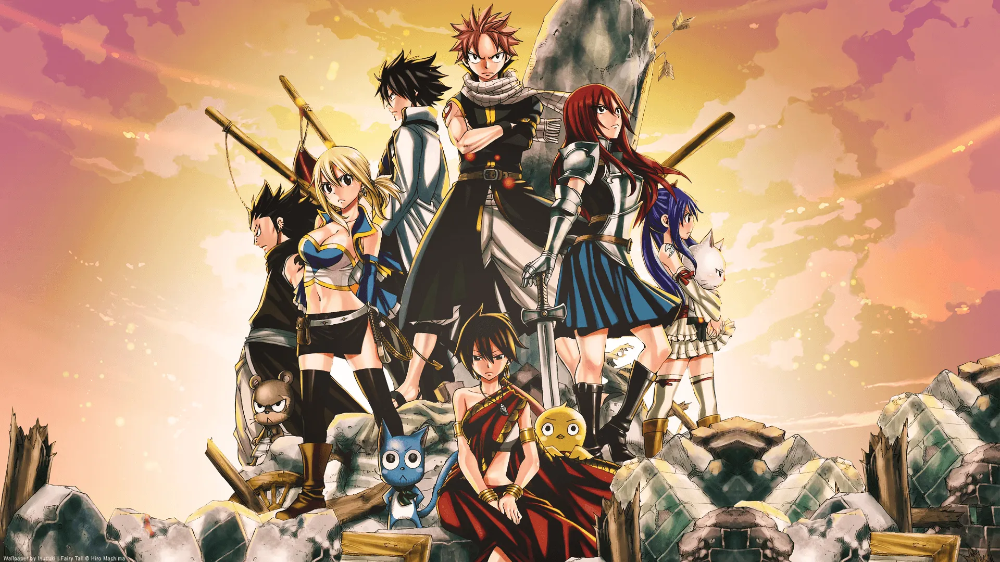
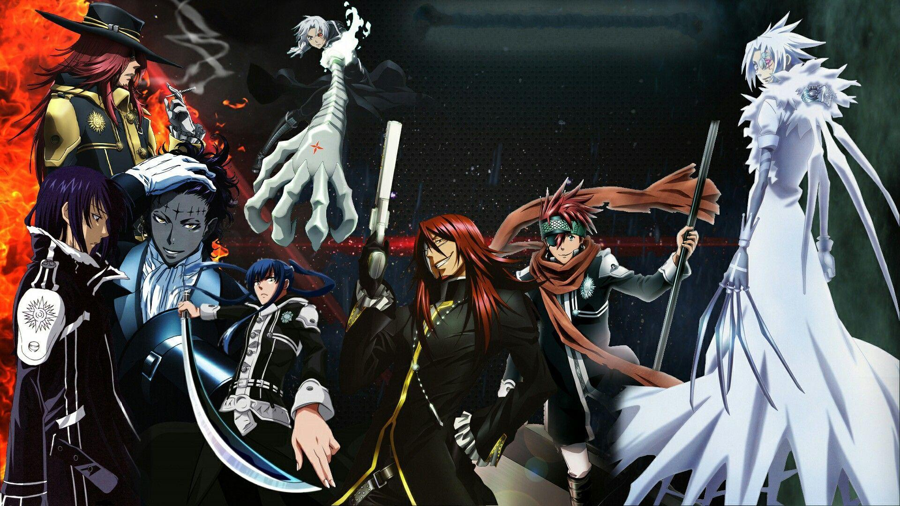

Attack on Titan
Studio: Wit Studio
Episodes: 87
Status: Ongoing
Summary: In a world where humanity is on the brink of extinction, soldiers fight giant humanoid creatures known as Titans. Intense battles and mysteries unfold in this thrilling series.
But as the truth behind the Titans unravels, will humanity's greatest weapon become its ultimate downfall? Prepare for a twist that will change everything...

Naruto
Studio: Pierrot
Episodes: 220
Status: Completed
Summary: Naruto, a young ninja, seeks recognition from his peers and dreams of becoming the Hokage, the leader of his village. With epic battles and emotional moments, Naruto's journey inspires viewers.
But in a world filled with ninjas and ancient secrets, the path to greatness is treacherous. Will Naruto discover his hidden strength before it's too late?

My Hero Academia
Studio: Bones
Episodes: 138
Status: Ongoing
Summary: In a world where almost everyone has superpowers, a young boy without powers strives to become the greatest hero. Follow the inspiring journey of Midoriya Izuku.
But with every step he takes, dark forces move in the shadows. Will Midoriya's dreams be crushed before they can bloom?

Demon Slayer
Studio: ufotable
Episodes: 44
Status: Ongoing
Summary: After his family is slaughtered by demons, young Tanjiro embarks on a dangerous journey to save his sister and rid the world of the demon scourge.
But as Tanjiro faces stronger demons, dark secrets threaten to tear his world apart. Will he be able to protect what’s left of his family?

Fate/Zero
Studio: ufotable
Episodes: 25
Status: Completed
Summary: Seven mages summon powerful heroes from history to fight in the Holy Grail War. With breathtaking battles and complex characters, Fate/Zero is a must-watch for any action fan.
But when alliances crumble and betrayal runs deep, the line between hero and villain begins to blur. Who will win the ultimate prize?

Berserk
Studio: GEMBA, Millepensee
Episodes: 24
Status: Completed
Summary: In a world ravaged by war and darkness, one lone warrior, Guts, must walk the path of vengeance. Armed with his massive sword, he faces relentless demons and haunted memories.
But a mysterious brand etched onto his neck attracts terrifying beings. What is the true curse behind his fate?

Sword Art Online: Alicization
Studio: A-1 Pictures
Episodes: 47
Status: Completed
Summary: Kirito finds himself trapped in a virtual world unlike any he’s experienced before—Alicization. The line between reality and simulation becomes dangerously blurred.
Will he uncover the truth before time runs out?

Mob Psycho 100
Studio: Bones
Episodes: 37
Status: Completed
Summary: Shigeo "Mob" Kageyama is an ordinary boy with immense psychic power. But the real danger lies in the emotion building within him.
What happens when he can no longer control himself?

Vinland Saga
Studio: Wit Studio, MAPPA
Episodes: 48
Status: Ongoing
Summary: Thorfinn, the son of a legendary Viking warrior, is driven by revenge after witnessing his father's murder. But as the tides of war sweep across the brutal Norse world, he questions his true purpose.
Will he discover a new path amidst the violence?

Akame ga Kill!
Studio: White Fox
Episodes: 24
Status: Completed
Summary: Tatsumi joins the assassin group Night Raid to fight the corruption plaguing the capital. Each member wields a powerful Teigu weapon, but with enemies closing in, not everyone will survive.
How many lives will be sacrificed before justice is served?

Black Clover
Studio: Pierrot
Episodes: 170
Status: Completed
Summary: In a world where magic is everything, Asta stands out—because he has none. Determined to become the Wizard King, he rises through the ranks with sheer willpower.
Can he conquer the shadow that looms over the kingdom?

Dororo
Studio: MAPPA, Tezuka Productions
Episodes: 24
Status: Completed
Summary: Born without limbs and many body parts, Hyakkimaru embarks on a quest to reclaim what was stolen from him by demons, accompanied by a cunning young thief.
What will be left of his humanity as he regains his body?

Tokyo Revengers
Studio: LIDENFILMS
Episodes: 37
Status: Ongoing
Summary: Takemichi’s life changes when he travels back in time to prevent the tragic fate of the girl he loves. But infiltrating a violent gang won’t be easy.
Can he alter the course of destiny before it’s too late?

Fairy Tail: Dragon Cry
Studio: A-1 Pictures
Duration: 1h 24m
Status: Completed
Summary: The Dragon Cry staff has fallen into the wrong hands, and Natsu and Fairy Tail must retrieve it before catastrophe strikes.
But as battles intensify, will Natsu’s secret save his friends, or destroy them?

D.Gray-man
Studio: TMS Entertainment, Dentsu
Episodes: 116
Status: Completed
Summary: Exorcist Allen Walker fights against terrifying Akuma, but he uncovers a sinister truth behind his cursed arm and the demonic Earl controlling them.
Will he save the world and himself from this twisted fate?